Topic Analysis Demonstration: Do you think it is important to have children?
The following analysis would be on one topic related to the will of giving birth.
This demonstration dataset contains around 2200 rows, which is only a fraction of the posts related to this topic (132216 rows of data for the moment, earliest post was posted on March 18th 2014), and therefore, the result is not accurately reflecting the public opinion, but merely a demonstration of the whole process.
1. Data Collection and Preprocessing:
Currently, for Zhihu, we have already built the web-crawler for data collection. Crawlers for other platforms are still under development. The raw data collected is in this format:
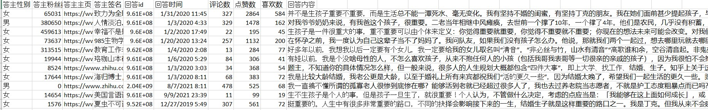Note: column names are manually translated, in the original csv file, however, the column names are in Chinese, because our laptops have some issues with utf-8-sig and if we set the column names into English for the crawler, the text in CSV file is unreadable.
The critical information would be CONTENT_OF_POST, which contains all the posts from different authors. Other information may be useful in the future, but not for the present.
Afterward, we would clean the data, including removing the duplicated rows, tokenize the text, remove stop words, and then store the tokenized text to a new column. A fraction of the data frame was illustrated in the following fashion:
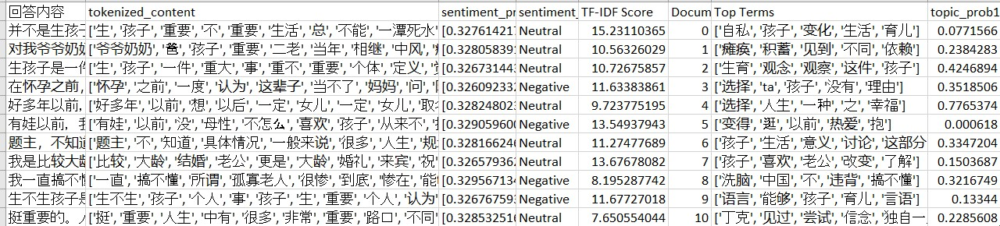2. Document-Level Analysis-Topic Modeling:
For document level analysis, the process would be:
- Sentiment Analysis: Run sentiment analysis on the processed data, then store the sentiment probabilities and label to the data frame. We used pre-trained RoBERTa from Transformers, as it is proven to be relatively consistent.
(…but the process was time consuming, a data frame of 2000 rows would take somewhere between 14 minutes to 30 minutes. We did run into some issues using pretrained models, such as random initialization of the parameters, therefore, we set the random seeds to 59 for consistency throughout all the different topics we were supposed to analyze. But if given more time, we would train our own model for sentiment analysis).
- Calculate the Document-Term Matrix (DTM) and Term Frequency-Inverse Document Frequency (TF-IDF): This step is aimed for finding topic top terms (TF-IDF measures the importance of a term within a document relative to a collection of documents rather than simply considering the frequency). In addition, we would count the 20 most frequent top terms and their average score distributions. Furthermore, a fascinating word cloud may be useful to get the hang of major topics and attract attention in the future website visualizations. 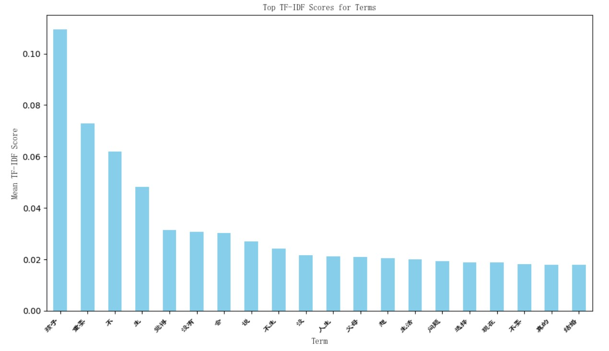 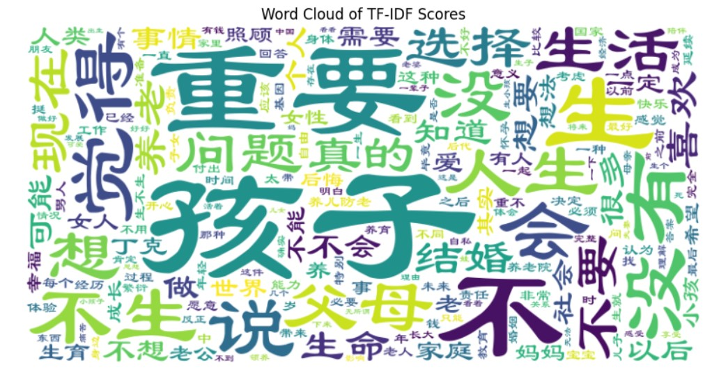
- Latent Dirichlet Allocation (LDA) modeling and Visualization: The model illustration is demonstrated as shown below: 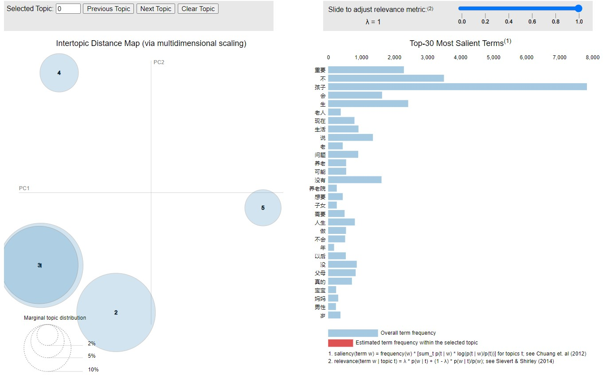
- Principal Component Analysis (PCA) Visualization: To double check, we also did the PCA visualization, which is similar to what Jenifer Pan and Yiqing Xu did, and essentially is a K-means clustering process. But instead of calculating the K-means, we decided to use the domain topic probabilities extracted from the document-term matrix. We set the random state to a default of 42 and number of clusters to 5, the same as LDA, since this is what PCA is based on and the demonstration are revealed below: 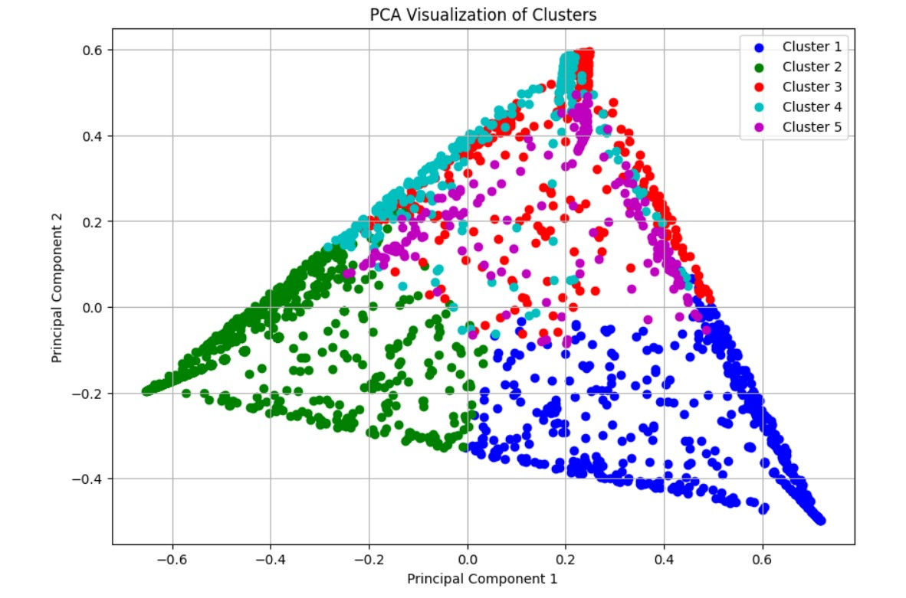
Based on our comprehension, the model uses Bayesian inference techniques to estimate the posterior distribution of latent variables, which includes the topic proportions for each document and the word distributions for each topic. We also succeeded in extracting the top terms and most frequent words for each distribution, and the sentiment distribution, as a reference for further comparison when we do the Aspect-Based Analysis. But the limitation of this approach is that due to the stochastic nature of LDA algorithm itself and random initialization of parameters, each time the distribution might differ. And, so far, we haven’t found time to experiment with different hyperparameters within the algorithm, since the LDA method can be complicated for us considering the math behind.

The result showed could be utilized instead of LDA visualization, since we haven’t really solved the random initialization of the LDA algorithm approach.
We have noticed that the clusters are somewhat elongated and spread out across both principal components. This suggests that the topics covered in the documents may be varied, and there may not be a clear separation between the clusters. Therefore, we will further experiment with the hyperparameter values, such as the number of topics, alpha, and beta to acquire interpretable results.
3. Aspect-Based Sentiment Analysis:
In an ideal world, we would train our own model to do the opinion spectrum extraction (a simple Naïve Bayes Classifier would be sufficient). However, as we don’t have the time to manually label at least thousands of rows of text, we chose to do Rule-Based Aspect extraction and aspect Analysis, which also includes visualization for the sentiment distribution of each aspect.
This is the tree map based on the Aspect distribution and frequency.
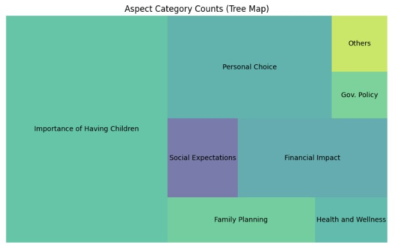We have also managed to visualize the aspect distribution, sentiment distribution per aspect for further analysis.
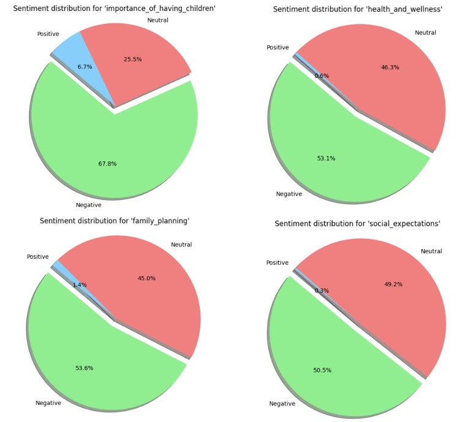4. Validation and Interpretation:
4.1 Public Opinion:
Based on all what we extracted from posts under the question of “Do you think it is important to have children?”, we have the following findings:
- Frequent Words and Topics: The most frequent words and topics across the clusters unravel common themes related to children, family, parenting, and social expectations.
- Cluster Distribution: The PCA visualization shows that the clusters are not clearly separated, suggesting that the discussions on having children are multifaceted and consist of a variety of perspectives.
- Aspect Frequencies: The aspect frequencies indicate that the most prevalent aspects are "Importance of Having Children", "Personal Choice", and "Financial Impact". This highlights that these aspects are central to the discussions about having children.
- Sentiment Distribution: The sentiment distribution for each aspect reveals that the overall sentiment is mostly negative across all aspects. However, there are some variations, with "Others" having a higher proportion of positive sentiment and "Government Policy" having a slightly lower negative sentiment.
Analysis and Insights:
- Negative Sentiment: The overall negative sentiment suggests that there are many concerns and challenges associated with having children. These concerns may include financial burden, social pressures, and personal sacrifices.
- Varied Perspectives: The lack of clear separation in the PCA plot and the diverse sentiment distribution across aspects demonstrate that the topic of having children is complex and involves a range of viewpoints. People have different reasons for wanting or not wanting children, and there is no one-size-fits-all answer.
- Key Aspects: The prominence of aspects such as "Importance of Having Children", "Personal Choice", and "Financial Impact" underscores the significance of these factors in the decision-making process around having children.
4.2 Government’s Narratives and Comparison with Public Opinion:
To step further, we also used 29 different government internal references, public documents, and news from state-owned press on the topic of birth rate (and policies aiming to boost birth rate) to represent the narratives of the government. Here are the comparative results:
By comparing the most frequent words, top terms (calculated based on TF-IDF score) in these 29 texts representing Government’s narrative, we have found that:
- Top 8 Most Frequent Words: Top 8 most frequent terms suggests that the government’s focus on this topic is on birth rate, population, economic development, and high-quality development of the society. Contents that public focuses on, such as social welfare, maternity benefits, and tax deductions are merely mentioned. 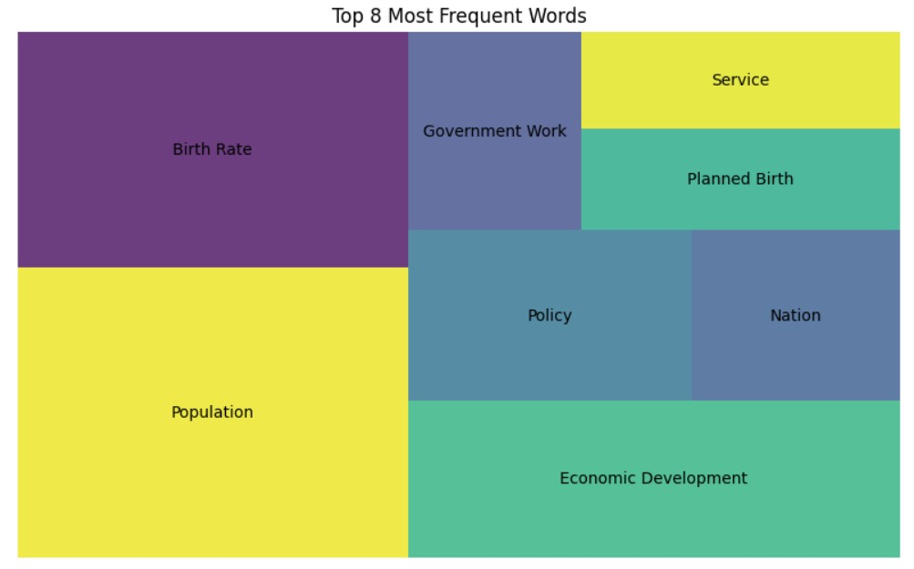
- Top 8 Top Terms calculated with TF-IDF scores and Document Term Matrix: The result also confirmed the previous results. The 8 top terms are population, birth rate, economic development, policy, service, planned birth, high quality (development of society) and specialty of China. 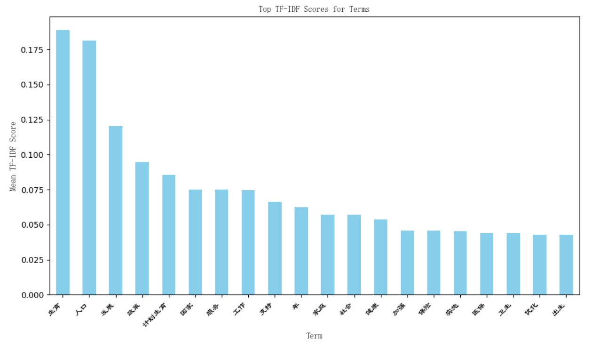 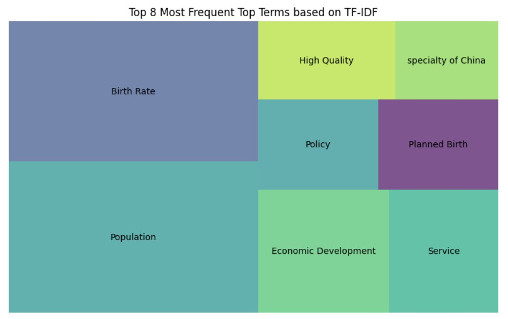 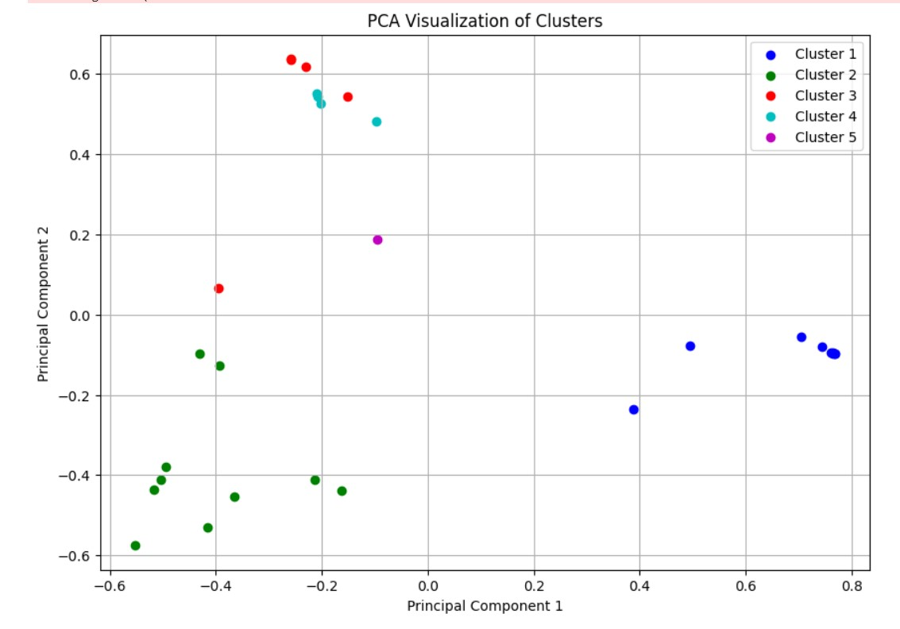
V. What’s Next:
a. Other Information on the Dataset:
We have yet to fully utilize other valuable data collected, such as the total counts of replies, likes, and thumbs-ups for each post, as well as the total number of followers for each author. These metrics, including likes and thumbs-ups, can serve as valid indicators of public opinion.
b. Other Statistical Analysis:
To date, we have not conducted any regression analyses for correlations or pursued causal analysis. We plan to explore additional methods when time permits, such as Confirmatory Factor Analysis and Exploratory Factor Analysis.
c. Qualitative Analysis:
While we have identified disparities between public opinion and government narratives on this topic using available tools, further insights into the underlying reasons require expertise in the realms of politics and social science.